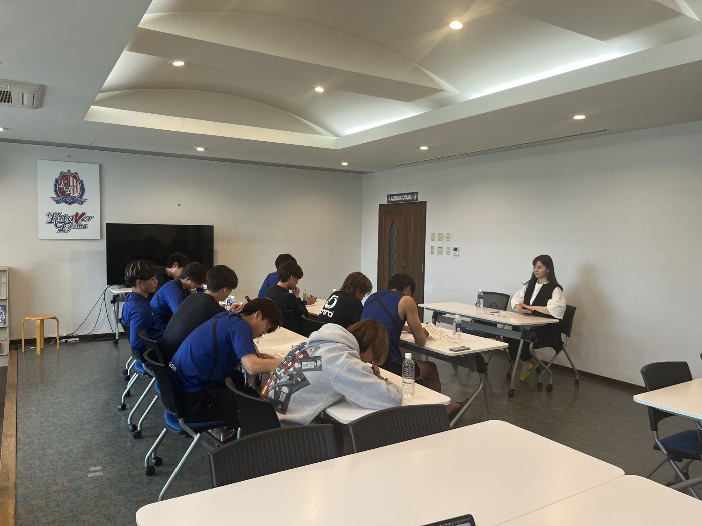
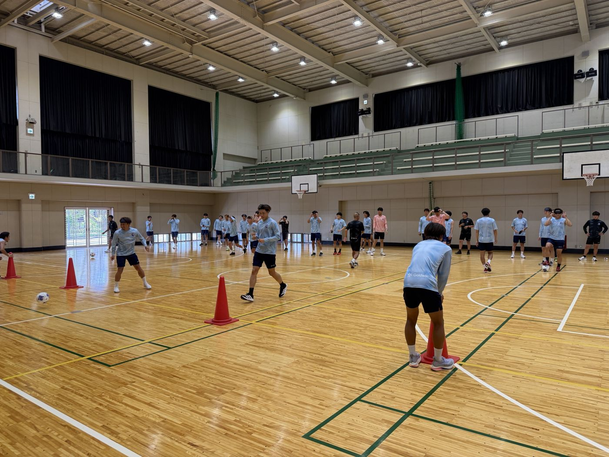
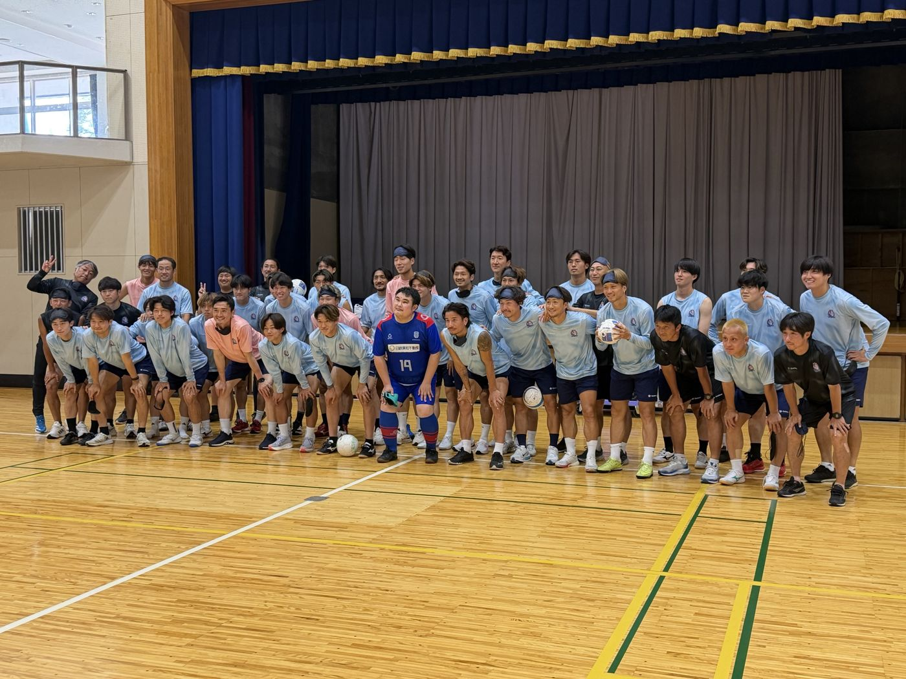
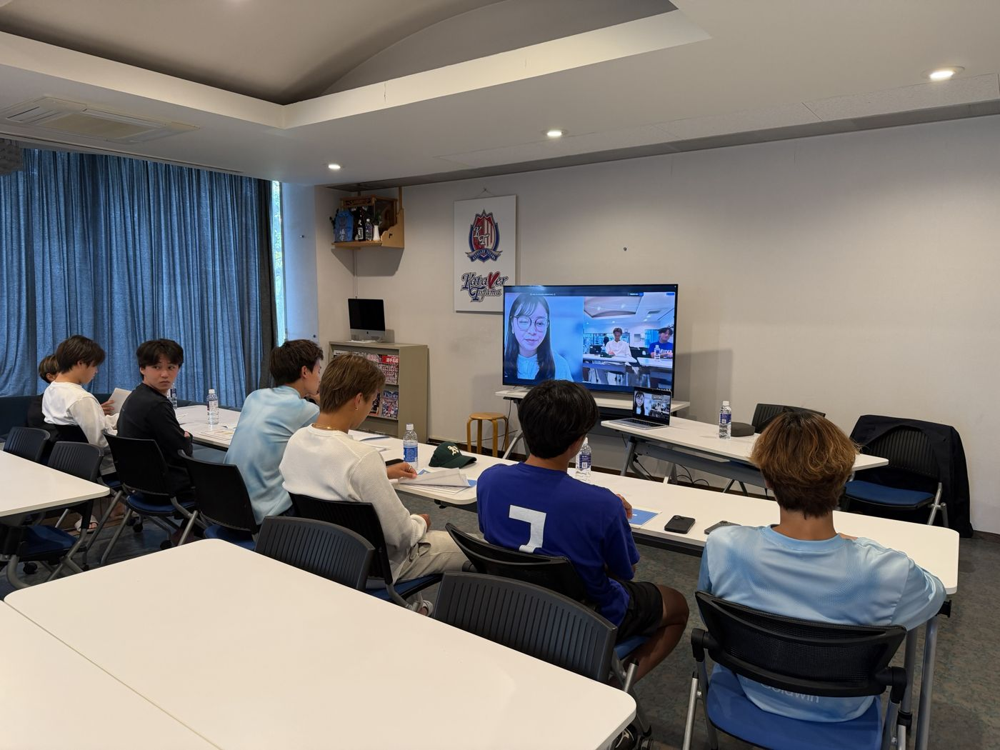
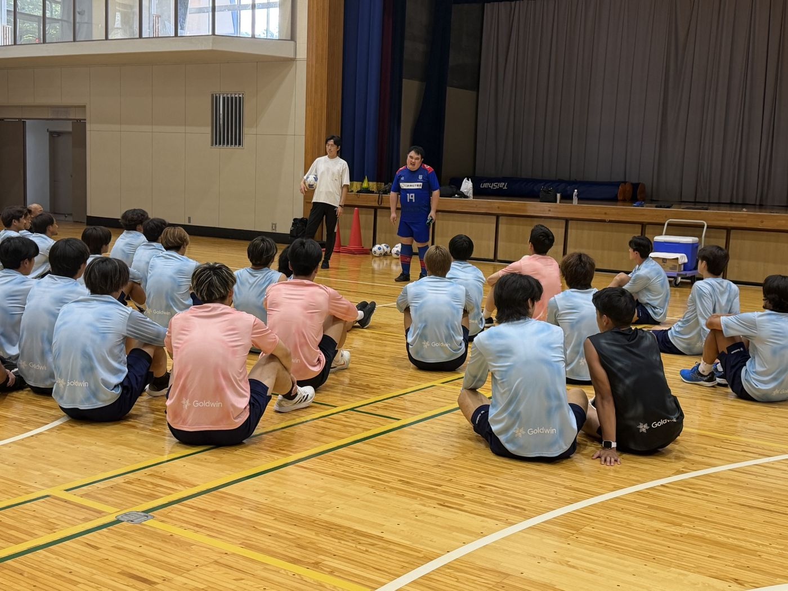

JLINE ACADEMY ｜ ご提案
KUROBEアクアフェアリーズ富山 様JLINEアカデミーのご提案
競技力を伸ばす学びは、そのまま選手のキャリアの力になる。
JLINEアカデミーは、元Jリーガーが立ち上げたアスリートの育成プログラムです。座学と体験の両方から、自分で考え、伝え、チームで動く力を育てます。ねらいは今の競技力を伸ばすこと。身につけた力は、競技を終えたあとも選手を支える土台になります。
学び方座学 ＋ 体験
育つ力（社会人基礎力）考え抜く力 ／ 前に踏み出す力 ／ チームで働く力
コートで競技力が伸びる
競技を終えたあともキャリアの力になる
学び方は2つどちらか一方でも、組み合わせても実施できます
| プログラム | 内容 | 競技力につながる | キャリアにつながる |
|---|---|---|---|
| 座学で学ぶ研修・1on1（オンラインでも実施可） | |||
| 自己分析 | 行動特性診断とモチベーショングラフで、強みや調子の波を整理し「自分の取扱説明書」をつくる | 調子の崩れ方と、立て直し方を知る | 自分の強みを、自分の言葉で説明できる |
| 目標設定・行動設計 | 技術・身体・頭脳・人間性の4領域で現在地を整理し、行動に落とせる目標と「壁への対策」をつくる | 練習の目的がはっきりし、毎日の練習の質が上がる | 目標から逆算して計画し、振り返って改善する力 |
| コミュニケーション・メディア研修 | 伝える力・聞く力を学ぶ。メディア研修は元アナウンサーが講師となり、インタビュー対応も練習する | プレー中に短く正確に伝える | 取材やSNSでの発信、仕事での報告・説明 |
| 1on1（月1回） | 研修の学びを一人ひとりの課題につなげ、目標の振り返りと次の一手を一緒に考える | 振り返りから次の試合での改善まで、毎月回り続ける | 考えを言葉にして整理し、自分で決める習慣 |
| 体験で学ぶ体験型プログラム | |||
| ブラインドサッカー体験 | アイマスクで視覚をOFFにし、声だけで動く・動かす。監督・スタッフも選手と同じ立場で参加する | レシーブやブロックの連携に欠かせない、声かけの量と質 | 相手に伝わる伝え方、信頼して任せる力、多様性への理解 |
| スポGOMI | ごみ拾いのチーム競技。作戦を立て、60分で拾った量と種類を競う。ファンとの混成チームも可 | 状況を見て作戦を直す力。タイムアウト中の修正と同じ | リーダーシップ、初対面の人と協働する力 |
| スポンサー営業への同行 | チームの社員の営業に同行し、訪問先の事前調査から商談の場までを体験する | 支えてくれる人を知り、応援に応える意識が強まる | 仕事の現場を知り、社会人との接点を持つ |
カターレ富山での実施風景



カターレ富山での取り組み2025年から継続。研修だけの実施から、1on1と体験まで組み合わせる形に広がっています


- 2025年3〜6月
- 若手選手向けの講義（全6回）と行動特性診断
- 2026年1月〜
- 若手育成プロジェクト（1年半）。1on1、メディア研修
- 2026年7月
- キャンプで、チーム全体のブラインドサッカー体験
- 準備中
- スポンサー営業同行、スポGOMI（2027年春）
3クラブで実施（カターレ富山・FC町田ゼルビア・ザスパ群馬）50名以上のJリーガーが受講
選手の変化
初回の1on1では「全試合出場」など、なりたい状態だけの目標でした。半年後には選手自身が「ゴール＋アシスト10」と数字で目標を立て、残り試合数からペースを逆算するようになっています。
ブラインドサッカー体験では「声で人を動かせる」との声もありました。
「やって終わり」にしない仕組み
- 体験前シート知りたいこと・試したいことを書いて臨む
- 体験・研修プログラムに参加する
- 体験後シート気づきを書き、体験前の問いと見比べる
- 1on1競技で試す行動を1つ決める
- 共有会選手同士で学びを発表し合う
進め方のご提案
STEP 1まずは1回から研修か体験会を1回。例：ブラインドサッカー体験（60分）
STEP 2組み合わせるチームの課題に合う座学と体験を選んで組み合わせる
STEP 3通年で伴走月1回の1on1で、目標設定から振り返りまで伴走する
シーズン中はオンラインで座学、オフの期間に体験型など、チームの日程に合わせて設計します。
まずは30分ほど、チームの現状とご要望をお聞かせください。オンラインでも伺います